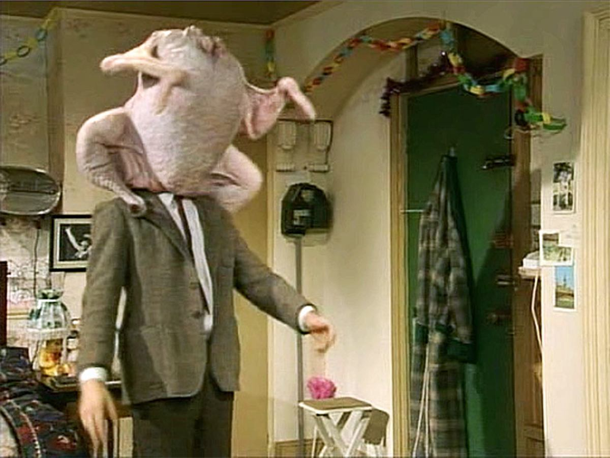

Thanksgiving Turkey

Mr.Bean hilariously stumbling around with his hed stuck inside a turkey
Are you ready to make the BEST Thanksgiving turkey recipe? Trust me, it's easier than you think! You don't need to brine and you don't need to baste. Just a few simple steps and you'll have a perfectly golden, juicy, and insanely flavorful roasted turkey recipe that'll impress your family and guests.
Ingredients
- Turkey: Any whole frozen (or fresh) turkey at the market works. For details on what size is best, read below.
- Fresh Herbs: Rosemary, thyme, and sage are classic poultry herbs. And while you can use dried, I do think fresh imparts a more robust flavor.
- Onion and Garlic: The onion will go inside the turkey and the garlic will be rubbed on the outside. But together, these aromatics will infuse the meat and skin with savory goodness.
- Lemon: Adding lemon wedges inside the turkey helps keep the meat moist and adds a zing of freshness.
- Butter: A generous amount of butter makes for a juicy turkey without the need to brine. Now there’s some time savings!
- Salt and Pepper: For that perfectly seasoned bird.
- I also put vegetables under my turkey (like celery, carrots, and onion) while it’s roasting. This isn’t required, but I do recommend it. Not only will it amp up your turkey recipe, but it will take your turkey gravy flavor to the next level too!
Preparation Tips
- For 8 people: get a 10-12 pound turkey
For 12 people: get a 14-18 pound turkey
for 16 people: get an 18-24 pound turkey
- The biggest mistake people make is buying a frozen turkey the day before Thanksgiving. Don’t do that! Remember that a big turkey is going to take a while to defrost in the fridge. It takes about 24 hours per 5 pounds of turkey to properly thaw. My recommendation- buy your turkey at least a week before Thanksgiving. Then, let it thaw in the fridge 2 to 4 days before the big day.
- If you want perfectly cooked stuffing and perfectly cooked turkey, cook them separately. If you overfill the cavity of the turkey it slows down the cooking time. And besides, it’s better to fill the turkey with aromatics and herbs that give it flavor and moisture. So cook your stuffing in a casserole dish instead.
Steps
- Once your turkey is thawed, let it rest at room temperature for an hour. Remove the bag of giblets and the neck, found in the large cavity and sometimes the smaller neck cavity (check both areas just to make sure you got everything out). You can save these items for gravy or discard them.
- Make the herb butter by stirring together the softened butter, garlic, salt, pepper, rosemary and thyme in a small bowl.
- Loosen the skin of the turkey on top of the breasts by gently sliding your fingers underneath. Add about 1/3 of the herb compound butter and spread it evenly underneath the skin. Spread the remainder of the herb butter all around the outside of the turkey.
- Resist the urge to tie the turkey legs together. Yes, it makes the turkey picture perfect, BUT trussing prevents the air from circulating properly, leaving the meat to cook unevenly. So even though your mom (and likely grandmother) did it, skip it.
- Place the turkey on a roasting rack or on a bed of veggies (or both – which is what I do). Then there’s only one thing left to do – cook the turkey!
- For a 10-14 pound turkey: 2 1/2 hrs to 3 1/2 hrs
For a 14-18 pound turkey: 3 1/2 hrs to 4 1/2 hrs
For a 18-22 pound turkey: 4 1/2 hrs to 5 1/2 hrs
- Once you remove the turkey from the oven it’s imperative that you let it rest for at least 30 minutes. This allows the juices to redistribute in the meat, making for a juicer turkey. Better to have a juicy turkey than a sopping wet cutting board!
Index